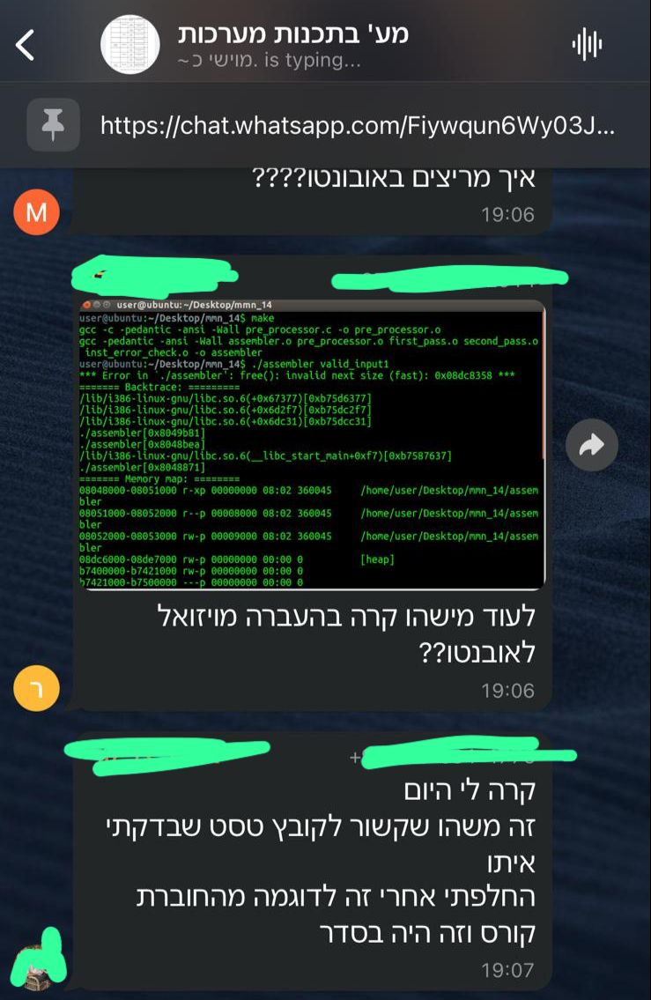

*נכון ל-2025
איך לעבוד עם מק בעל מעבד מסדרת M בקורס:
עשיתי את הקורס ב2023b, באמת ניסינו כל הסטודנטים שהיה להם מק למצוא פתרון, אין פתרון קסם או פשוט, יש מספר פתרונות שיכולים לעזור ושבעזרתם תצליחו לעבוד על המק שלכם אך עם שינויים מסויימים.חשוב להבין שאי אפשר להריץ את הסביבה שלהם על מק עם מעבד מסדרת M ללא שינויים או התאמות מיוחדות. כל מה שאני רושם פה הוא מתוך כוונה ליצור שמור ידע ולחסוך לכם זמן.
לא מאמינים? תגללו לסוף העמוד ותראו דוגמאות
בואו נבין מה הפער שבגללו אי אפשר:
בקורס אנחנו צריכים לקמפל ולהריץ את הקוד על מערכת הפעלה מבוססת
לינוקס 32-ביט, שמריצה קוד בארכיטקטורת
x86 (32-bit) — שלעיתים מכונה גם
x86_32 או i386. זו ארכיטקטורה שמתאימה
למעבדים ותיקים ממשפחת אינטל ודומיהם.
לעומת זאת, מחשבי Mac מודרניים עם מעבדי
Apple Silicon (כמו M1, M2) מבוססים על ארכיטקטורה
אחרת לגמרי — ARM64 (המכונה גם
aarch64). לכן, הם לא יכולים להריץ ישירות קוד שנכתב
עבור x86_32, אלא רק דרך אמולציה מסובכת ולעיתים לא אפשרית כלל.
חשוב לשים לב: המונחים "32-bit" ו-"64-bit" מתארים את רוחב הכתובות של המעבד, אבל יש כמה משפחות של מעבדים שיכולות להיות 32-ביט — לא רק x86. לכן, כשאומרים שצריך תמיכה ב-32 ביט, חשוב לדייק ולהגיד שאנחנו מדברים על x86 32-bit, ולא על כל ארכיטקטורה שהיא 32-ביט.
אם תרצו להעמיק, חפשו בגוגל את המונחים: x86_32,
x86_64, i386, amd64,
ו-arm64.
שאלה שחוזרת על עצמה:
״אבל אמרו לי שאין בעיה לכתוב בשפת C על מק״ - נכון אין בעיה, זה אפילו אחד הפתרונות שיש בהמשך, אבל בגלל הפער שהסברתי, זאת לא אותה סביבה, ולכן קיים סיכוי שהקוד לא יתקמפל ללא שום הערה או שגיאה על הלינוקס אם הוא נכתב על המק שלכם.
לכן גם אם תריצו אובונטו, זאת לא הגרסה שלהם ולא הסביבה שלהם, ולכן זה לא יעזור לכם, זה לא יקדם אתכם וזה לא יפתור את הבעיה. בנוסף קיים סיכוי שאותו קוד שעובד אצלכם לא יעבוד / יתקמפל כמצופה בסביבה שלהם (קרה לי). באמת שחבל על הזמן של לנסות למצוא פתרון כי זה גם ייקח יותר זמן מאשר לעשות את אחד הפתרונות המוצגים וגם תגיעו למסקנה שאיתה פתחתי את הפסקה.
יש כמה פתרונות אפשריים
הם מדורגים מהקל והנגיש ביותר ועד הקשה
יותר שמיועד למי שיצא לעשות דברים כאלו בעבר:
- פתרון 1: למצוא מחשב ישן / אחר בבית שיש עליו Windows, להתקין שם הכל כרגיל, בדיוק כמו שיש באתר הקורס. על המחשב להתקין בנוסף TeamViewer / Any Desk או כל תוכנה אחרת שמאפשרת שליטה מרחוק על המחשב. להתחבר דרך המק ולעבוד שם.
-
פתרון 1 משודרג ומהמומלץ: לעבוד על המק רגיל, עם
CLion או כל IDE אחר, לעבוד עם GitHub, ולפני כל הגשה למשוך את
הקוד על המחשב שעליו מותקן Windows, לקמפל, לעלות את הקבצים החדשים
חזרה ל-GitHub ולהגיש אותם.
על הדרך מרוויחים ניסיון עם GitHub. - פתרון 2: לדבר עם השותף לפרויקט / חבר / כל מישהו קרוב אליכם שאפשר לבקש ממנו לקמפל את הקוד אצלו במחשב (כמובן דורש להתקין שם את כל מה שנדרש).
- פתרון 3: שימוש ב-UTM כדי להפעיל מכונה וירטואלית על גבי המק, עם אובונטו תואם. ניתן להוריד את אובונטו עבור i386 כאן ולצפות בהדרכה כיצד להגדיר זאת כאן.
- פתרון 4: שימוש במונוריפו וב-GitHub Actions לבדיקה אוטומטית של תקינות הקוד במערכות האוניברסיטה. פרויקט לדוגמה שמתעד איך להשתמש במונוריפו יחד עם GitHub Actions זמין כאן. הפרויקט מתמקד בכתיבת קוד ANSI C, ומפעיל בדיקות תקינות על סביבת Windows-2019 עבור כל PR.
דוגמה לפתרונות של מטלות עבר, איך צריך להגיש, איזה קבצים ועוד שווה לשמור את הקישור GitHub Repository
אני אומר שוב, כל מה שרשום פה זה מתוך כוונה לעזור לכם ולחסוך לכם זמן, אין טעם לנסות להוכיח שאפשר להריץ את זה על המק או שאפשר לעבוד רגיל והכל טוב.
הנה לקט של תיעודים שאספתי במהלך הסמסטרים האחרונים שמראים את הבעיה בלעבוד על סביבה שונה ממה שמסופק, ולמה חשוב כל הזמן לקמפל על הסביבה שלהם ולוודא שהכל עובד כמצופה.
